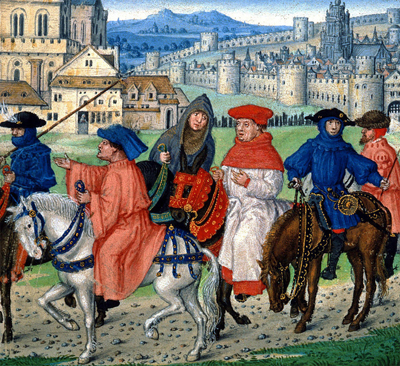
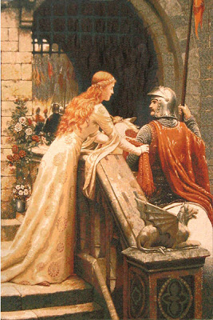

This is a template for a simple marketing or informational website. It includes a large callout called a jumbotron and three supporting pieces of content. Use it as a starting point to create something more unique.
1343-1400
In days of old there lived, of mighty fame,
A valiant Prince, and Theseus was his name;
A chief, who more in feats of arms excelled,
The rising nor the setting sun beheld.
Of Athens he was lord; much land he won,
And added foreign countries to his crown.
In Scythia with the warrior Queen he strove,
Whom first by force he conquered, then by love;
He brought in triumph back the beauteous dame,
With whom her sister, fair Emilia, came.
With honour to his home let Theseus ride,
With Love to friend, and Fortune for his guide,
And his victorious army at his side.
I pass their warlike pomp, their proud array,
Their shouts, their songs, their welcome on the way;
But, were it not too long, I would recite
The feats of Amazons, the fatal fight
Betwixt the hardy Queen and hero Knight;
The town besieged, and how much blood it cost
The female army, and the Athenian host;
The spousals of Hippolyta the Queen;
What tilts and turneys at the feast were seen;
The storm at their return, the ladies’ fear:
But these and other things I must forbear.
1836-1907
THE GRAY arch crumbles,
And totters and tumbles;
The bat has built in the banquet hall:
In the donjon-keep
Sly mosses creep; 5
The ivy has scaled the southern wall:
No man-at-arms
Sounds quick alarms
A-top of the cracked martello tower:
The drawbridge-chain 10
Is broken in twain—
The bridge will neither rise nor lower.
Not any manner
Of broidered banner
Flaunts at a blazoned herald’s call. 15
Lilies float
In the stagnant moat;
And fair they are, and tall.
1771-1832
O young Lochinvar is come out of the west,
Through all the wide Border his steed was the best;
And save his good broadsword he weapons had none,
He rode all unarm’d, and he rode all alone.
So faithful in love, and so dauntless in war,
There never was knight like the young Lochinvar.
He staid not for brake, and he stopp’d not for stone,
He swam the Eske river where ford there was none;
But ere he alighted at Netherby gate,
The bride had consented, the gallant came late:
For a laggard in love, and a dastard in war,
Was to wed the fair Ellen of brave Lochinvar.
{kind=link}
{kind=link}
{kind=link}